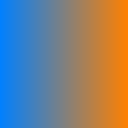

We address fundamental aspects in the approximation theory of vector-valued finite element methods, using finite element exterior calculus as a unifying framework. We generalize the Clément interpolant and the Scott-Zhang interpolant to finite element differential forms, and we derive a broken Bramble-Hilbert Lemma. Our interpolants require only minimal smoothness assumptions and respect partial boundary conditions. This permits us to state local error estimates in terms of the mesh size. Our theoretical results apply to curl-conforming and divergence-conforming finite element methods over simplicial triangulations.
- The Clément and Scott-Zhang interpolants are standard tools in finite element theory
- Surprisingly, the literature only provides them for scalar-valued finite elements
- Extending the Clément and Scott-Zhang interpolants to vector-valued finite elements comes with new mathematical challenges
- We also want to generalize a recent result by Veeser (broken Bramble-Hilbert lemma) to vector-valued finite elements
Generalization to vector-valued finite element spaces of
- Clément Interpolant
- Scott-Zhang Interpolant
- Broken Bramble-Hilbert lemma
We formulate our results in the framework of finite element differential forms.
Let \(\calP_r(\calT)\) be the degree \(r\) Lagrange space with respect to some triangulation \(\calT\).
A scalar function \(\myscalar\) in a Sobolev space \(W^{r+1,p}\) can be approximated locally by Lagrange elements of degree \(r\).
Namely, the Clément interpolant \(\Clement : W^{r+1,p} \rightarrow \calP_r(\calT)\) estimates the approximation error over a tetrahedron \(T\) by the Sobolev norm over the local patch \(\Patch\):
$$ \| \myscalar - \Clement \myscalar \|_{L^p(T)} \leq C h_{T}^{r+1} | \myscalar |_{W^{r+1,p}( \Patch )} $$
This is standard. Similarly when homogeneous boundary conditions are imposed.

This is well known for scalar functions and Lagrange elements.
Do we actually know how to do it for curl-conforming and divergence-conforming finite element spaces?
Curl-conforming and divergence-conforming finite element spaces
carry tangential and normal boundary conditions, respectively.
Thus the Clément interpolant requires qualitatively different techniques.
Bonus: resolving those issues easily enables the Scott-Zhang and the broken Bramble-Hilbert lemma too.
The Clément interpolant without boundary conditions easily generalizes to Nédélec elements.
Let \(\Ned_r(\calT)\) be the degree \(r\) Nédélec space with respect to some triangulation \(\calT\). Any vector field \( \myvector \in \bfH(\curl) \) with coefficients in \(W^{r+1,p}\) can be approximated locally by Nédélec fields.
Namely, the Clément interpolant \(\Clement : \bfH(\curl) \rightarrow \Ned_r(\calT)\) estimates the approximation error over a tetrahedron \(T\) by the Sobolev norm over the local patch \(\Patch\):
$$ \| \myvector - \Clement \myvector \|_{L^p(T)} \leq C h_{T}^{r+1} | \myvector |_{W^{r+1,p}( \Patch )} $$
But what if we impose tangential boundary conditions?
The classical Sobolev trace theory does not apply to \( \bfH(\curl) \).
The boundary trace of \( \myvector \in \bfH(\curl) \) is generally defined as a functional:
$$ \oint_{\partial T} \langle \myvector_{\tan}, \boldphi \rangle = \int_{T} \langle \curl \myvector, \ext \boldphi \rangle - \int_{T} \langle \myvector, \curl \ext \boldphi \rangle $$
where \( \boldphi \) is a tangential test vector field and \( \ext\boldphi \) is its extension.
This research has developed a localized basis of \(\Ned_r(\calT,\Gamma)\) and biorthogonal degrees of freedom.
Furthermore, the degrees of freedom along \(\Gamma\) are represented as boundary integrals using the aforementioned integration-by-parts formula.
Let \(\Ned_r(\calT,\Gamma)\) be the Nédélec space with boundary conditions along \(\Gamma\).
Let \( \myvector \in \bfH(\curl,\Gamma) \) with boundary conditions along \(\Gamma\). Assume that \( \myvector \in W^{r+1,p} \).
Our Clément-type interpolant \(\Clement : \bfH(\curl,\Gamma) \rightarrow \Ned_r(\calT,\Gamma)\) with boundary conditions leaves out the DOF along \(\Gamma\). We show that
$$ \| \myvector - \Clement \myvector \|_{L^p(T)} \leq C h_{T}^{r+1} \left( | \myvector |_{W^{r+1,p}( \Patch )} + | \curl \myvector |_{W^{r,p}( \Patch )} \right) . $$
The Clément interpolant has homogeneous boundary conditions along \(\Gamma\) "hard-coded". By contrast, the Scott-Zhang interpolant interpolates any boundary values along \(\Gamma\).
Our Scott-Zhang interpolant \(\Scottzhang : \bfH(\curl) \rightarrow \Ned_r(\calT)\) preserves homogeneous tangential boundary conditions along \(\Gamma\),
$$ \myvector \in \bfH(\curl,\Gamma) \implies \Scottzhang \myvector \in \Ned_r(\calT,\Gamma) $$
and satisfies the error estimate $$ \| \myvector - \Scottzhang \myvector \|_{L^{p}\Lambda^{k}(T)} \leq C h_{T}^{r+1} \sum_{ \substack{ T' \in \Patch } } \left( | \myvector |_{W^{r+1,p}(T')} + | \curl \myvector |_{W^{r,p}(T')} \right) $$ whenever $$ \myvector \in \bfH(\curl,\Gamma) \cap \bigoplus_{ T \in \calT } W^{r+1,p}(T) . $$
We get the same approximation power as for vector fields that are globally in \(W^{r+1,p}\) as long as the vector fields is in \(\bfH(\curl)\) and at least piecewise in \(W^{r+1,p}\).
Suppose an \(\bfH(\curl)\) vector field over a physical domain
enjoys higher Sobolev regularity.
If that vector field is transformed onto a parametric domain
for the error analysis of a non-conforming FEM,
the higher regularity is typically only retained piecewise.
The broken Bramble-Hilbert lemma allows us to exploit that piecewise regularity:
we get the same convergence rates as with conforming FEM approximating globally regular vector fields.
More generally than on this poster, we have approached:
- Divergence-conforming vector fields and finite element spaces
- Differential \(k\)-forms in any dimension \(n\), finite element spaces \(\calP_r\Lambda^k\) and \(\calP_r^-\Lambda^k\).
- Lebesgue exponents \( p \in [1,\infty] \)
Future additions:
- Extension to vector-valued hp-FEM?
- Commuting interpolants satisfying error estimates?
|
E. Gawlik, M. Holst, M. Licht, Local Finite Element Approximation of Sobolev Differential Forms.
Accepted for publication in ESAIM: M2AN. Arxiv: https://arxiv.org/abs/2011.00634 |